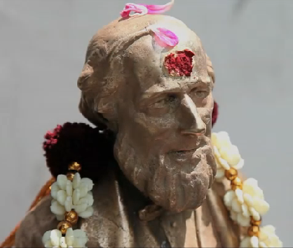

International
InternationalPitman hinduistycznym bogiem?
2011-04-08 | autor: flamenco108Czytam sobie różne wieści ze świata i takie coś mi wpadło, że Izaaka Pitmana w pewnym mieście w Indiach, Chennai, czczą jako boga. Oczywiście, boga stenografii. Codziennie studenci szkoły wraz z tzw. ciałem pedagogicznym odprawiają ceremonię zwaną “pudża”, polegającą na adoracji wszelkimi przyjemnościami, jak pożywienie, kwiaty, ogień, światło, dźwięk, zapachy itp. trzydziestocentymetrowej figurki nobliwego, angielskiego dżentelmena z bródką.

Jest także film o szkole stenografii w Chennai.
No niesamowite, prawdę mówiąc. Przez ostatni tysiąc lat odwykliśmy trochę od takich klimatów, jak sądzę. O Gildii Stenografów wspominałem na stronie głównej. Jest to jedna z najprężniej działających aktualnie szkół propagujących system Pitmana. Ostatecznie z materiału filmowego i z artykułu nie wyrozumiałem, czy uczą tylko stenografii angielskiej, czy także jej przekładu na któryś z języków wielkich Indii. Ale na ich stronie umieszczone są informacje na temat systemu Pitmana po angielsku i po tamilsku - szkoda tylko, że nie znam tamilskiego alfabetu, byłoby interesujące przyjrzeć się tej metodzie. Choć z pobieżnego jego przeglądu widać, że musieli docenić wynalazek stenografii.

Interesujące jest spostrzeżenie rzucone przez dyrektora szkoły: dziś nie ma chętnych do nauki stenografii, ponieważ jest to sztuka przydatna na stanowisku sekretarza/sekretarki. A dziś każdy chce być szefem. Zatem po co się uczyć nowych umiejętności, jeszcze ktoś mnie zatrudni na niższym stanowisku i uzna, że tylko do tego się nadaję? To może lepiej być niekompetentnym w ważnych sprawach i szczegółach, opanować sztukę gładkiego mówienia ogólnikami, a wszyscy pomyślą: O, oto człowiek stworzony do spraw wielkich. Uczyńmy go swoim wodzem. I tak się narodziła współczesna polityka.
Izaak Pitman szczególnie dobrze nadaje się na hinduistycznego boga, ponieważ przez całe swoje świadome życie był abstynentem i wegetarianinem, czyli wedle hinduistycznych standardów reprezentował najwyższy poziom moralny. Co prawda jego religia była ścisłym przeciwieństwem hinduistycznej różnorodności, ale to hinduistom wydaje się nie przeszkadzać. I bardzo dobrze.
2011-04-08 autor: flamenco108